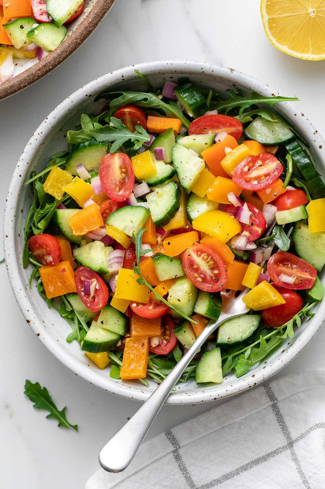
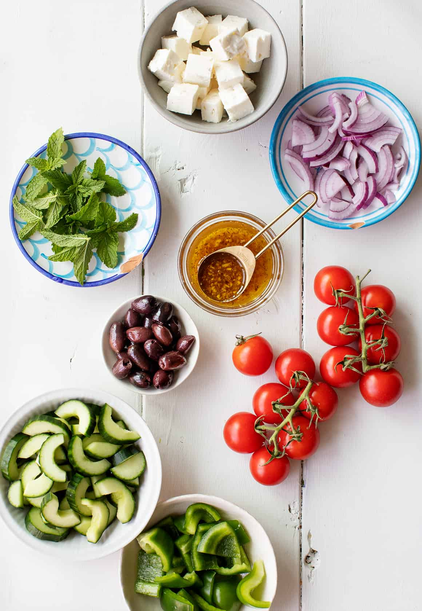
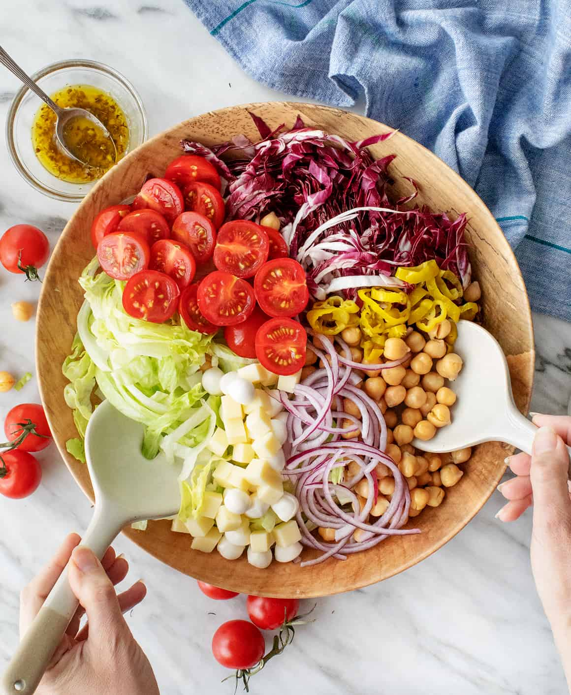
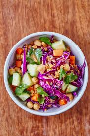

Italian Chopped Salad
This chopped salad recipe is exactly what I want to eat in spring and summer. It may be light and healthy, but it's still packed with bold flavor.
A food blog with fresh, zesty recipes.

Who else loves chopped salad? I’m a huge fan of all salads, but chopped salad has to be one of my favorites. Because the ingredients are, well, chopped, you can get a little bit of everything in each bite, so it’s extra-flavorful and fun to eat!
Speaking of fun, this chopped salad recipe comes from my friend Gaby’s new book What’s Gaby Cooking: Eat What You Want. If you’re not already familiar with Gaby’s blog and Instagram, you absolutely should be. Her recipes aren’t entirely vegetarian, but her California-style cooking is always packed with fresh produce. Her new book is gorgeous, colorful, and all about balance. You’ll find some recipes that are “light and easy when you want it,” and others that are “hearty and satisfying when you need it.” It’s a celebration of eating whatever makes you feel good, whether that’s a French Onion Grilled Cheese or a freimagesh salad like this one. Now that warm weather is finally(!) here, this chopped salad recipe is exactly what I want to eat. It’s light, fresh, and filled with tasty mix-ins, so even though it’s healthy, it doesn’t skimp on flavor. Enjoy it as a meal on its own or serve it as a side salad, but whatever you do, try it. It comes together in minutes, and it’s absolutely delicious.

Chopped Salad Recipe Ingredients
Here’s what you’ll need to make this chopped salad recipe:
-
Iceberg lettuce and radicchio– They create the salad’s fresh, crisp base. The green and red leaves are so pretty together!
-
Red onion– For crunch and sharp, oniony flavor.
-
Cherry tomatoes– With all that crisp lettuce and onion, you need something juicy to balance them out.
-
Chickpeas– Try roasting them for extra crunch!
-
Pearl mozzarella and provolone cheese– Why use one cheese when you could use two? I love the contrast of the soft mozzarella and the firm provolone.
-
Pepperoncini– With their tangy, spicy flavor, they take this chopped salad to a whole new level!
-
A lemon vinaigrette– This simple vinaigrette is like a homemade version of Italian dressing. Made with lemon juice, red wine vinegar, shallot, garlic, and dried oregano, it’s bright, tangy, and super easy to whisk together.
-
Dried oregano– This simple, delicious garnish fills the whole salad with fresh Italian flavor.
Gaby also calls for cubed Genoa salami, but I skip it to make this recipe vegetarian. Instead, I season it with a few generous pinches of salt while assembling. That way, I don’t miss the meat at all! You could also replace the salami with chopped sun-dried tomatoes or roasted red peppers. Let me know what variations you try!

In the past, I’ve made chopped salad with romaine lettuce, but I’m obsessed with the mix of iceberg lettuce and radicchio in Gaby’s recipe. Because both come in round heads, you can slice them into uniform thin strips. The onion slices have a similar shape too, so everything mixes together perfectly.

Whisk together the salad dressing ingredients, chop up the veggies, and toss to combine! Trust me, you’re going to love this one.

Italian Chopped Salad

Instructions
- Make the dressing. In a small bowl, whisk together the olive oil, lemon juice, vinegar, shallot, garlic, oregano, salt, and pepper, and set aside.
- Cut the iceberg lettuce in half through the core, then cut out the core. Slice the lettuce lengthwise into 1/4-inch strips. Repeat with the radicchio.
- In a large bowl, combine the lettuce, radicchio, tomatoes, chickpeas, mozzarella, provolone, and pepperoncini. Drizzle with the dressing and toss gently to coat. Season with salt and pepper and toss again. Sprinkle with extra oregano, and serve.
Notes
Note: Gaby's original recipe calls for 4 ounces cubed Genoa salami. To make this vegetarian, I left it out, and seasoned the salad with a few generous pinches of salt while assembling.
- rate this recipe (after making it)
- rating section
- notify me of follow-up comments via e-mail